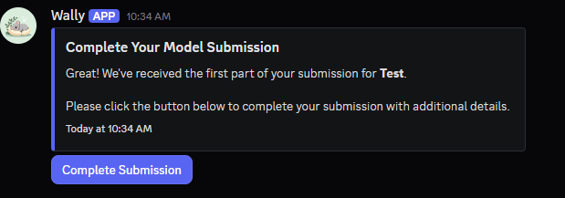

#
Model Maker Role
Last update: February 28, 2026
#
Introduction
To upload your Voice Models in the AI HUB Discord Server's #voice-models forum channel, you need to pass a Quality Control (QC) check to be sure that you post good voice models.
#
Requirements
#
Before proceeding, ensure you meet these requirements.
#
- Model's .PTH file.
- Model's .INDEX file.
- General information about the model.
- General information about its training process.
- A Hugging Face or weights.com account.
- At least 1 raw audio sample of the model WITH NO MUSIC.
#
#
Things to Avoid
#
These will disqualify your post
#
It lacks the correct files.
The .ZIP file must contain both the correct
.INDEX&.PTHfile.The correct .index is the one named
added_.- The added index contains the voice's accent and speech manor.
The correct .pth is the one that has your model's name, for example:
TylerSwift_e60_s120.pth- The .pth contains the actual model and pitch data.
#
#
Model is low quality.
- A bad model:
- Sounds scratchy/screechy.
- Has a muffled sound.
- Sounds inaccurate to the source.
- Is incapable of hitting certain notes.
- Has slurred speech.
- Is unable of pronouncing words correctly in its intended language.
- Has artifacting.
- Has noise.
#
#
An outdated extraction method was used.
#
#
The audio demo contains instrumental.
- Don't include ANY music in the audio demo, even if it's not copyrighted. This is due to:
- Concerns over copyright.
- In many cases, the music can "hide" the flaws of the voice model, making it harder to judge its quality.
#
The audio demo is altered.
Don't add reverb, equalize, or alter the demo in any way, as it won't be a faithful representation of the model. It must be the raw, unmodified output from the inference.
Trimming silences at the beginning/end of the audio demo is allowed.
#
#
Is a robotic or non-human voice.
Robotic, sound effect and drum models will also be rejected, because with these types of voices it is difficult to determine if you know how to clean a dataset properly.
However once you get model maker you will be able to post robotic, sound effect or drum models.
#
#
#
How to Submit
#
Step 1: Prepare the submission.
Once your model is ready, head over to the AI HUB's
#model-maker-rolechannel.Click the
Submit Modelbutton.

#
Now fill up the information about your model:
- model-name
- Its name.
- technology
-
The technology used for its training:
- RVC
- GPT-SoVITS
- extraction
-
The extraction method you used:
- RMVPE
- Crepe
- Mangio-Crepe (Obsolete)
- Harvest (Obsolete)
- PM (Obsolete)
- DIO (Obsolete)
- vocoder
-
The vocoder you used:
- HifiGan
- RefineGan
- epochs
- Total epochs amount.
#
Step 2: Complete the submission.
You will get a DM by Wally asking for you to Complete the Submission.
Click the
Complete Submissionbutton.

#
Now fill up the information about your model:
- Embedder
-
The Embedder Model you used:
- ContentVec
- Spin
- SpinV2
- Pretrain
- The Pretrain you used.
- Model Link
- Its download link from Hugging Face (right click and copy link the download icon of the model zip, for example https://huggingface.co/Nick088/TADC_Bubble/resolve/main/TADC_Bubble.zip?download=true) or Weights.
- Sample File
- An audio sample of it talking/singing.
- Additional Information
- Optional. Add more context about the model if you want.
- Click the
Submitbutton.
You can attach more samples when you repost the model to #voice-models.
#
#
Step 4: Send submission.
Once you are done filling the information it will send your model to get QCed
Now, your model will be posted in
#model-maker-submissionswhere other model makers will upvote or downvote your model reviewing it. After one week, the model maker submission will be accepted or rejected based on voting.If you made a mistake in your submission or you want to change something, you can try to contact staff or talk about in the
#model-maker-rolediscussion.If your model gets approved, you can then repost the model (& future models) to the
#voice-modelsforum.